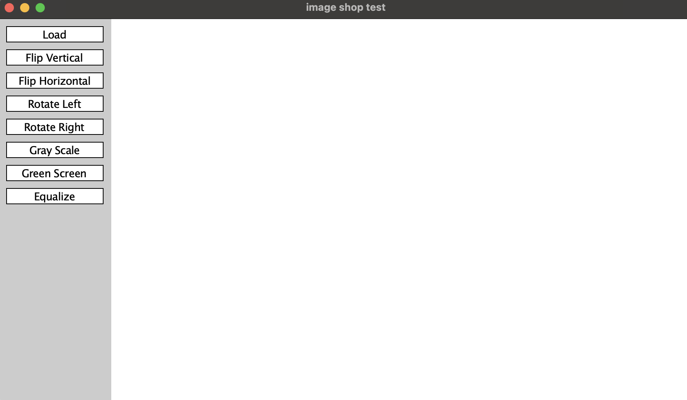
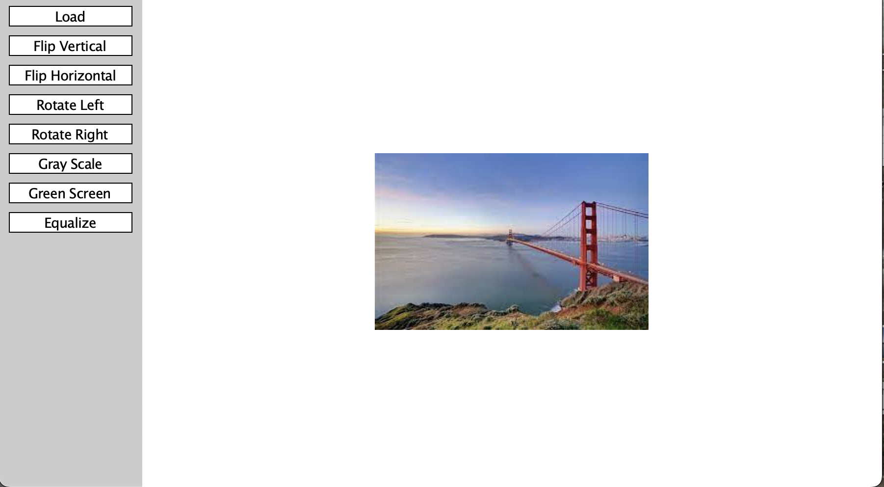
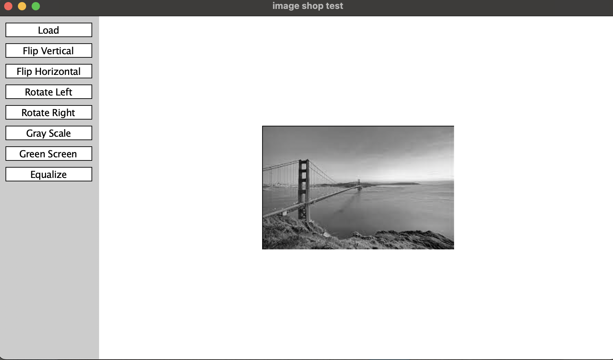
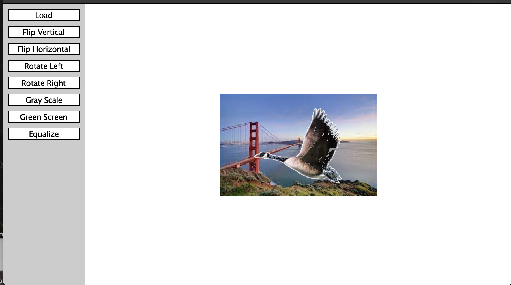

This project is a Python-based image manipulation application designed to provide a user-friendly interface for processing and enhancing digital images. Built on the Stanford Portable Library (SPL), this application offers a range of image transformation functions, from basic operations such as flipping and rotating images to more advanced features like applying grayscale, green screen effects, and equalization. The user interacts with the program through a graphical user interface, with buttons to trigger specific image processing functions.
The user interface of the program is basic, with all avaliable functions appearing on the left
Vertical Flipping The flip_vertical function is designed to flip an image vertically. It takes an input image as a parameter, processes it, and returns a new image that is the result of flipping the input image along its vertical axis. Here's a breakdown of how the flip_vertical function works:
Input Parameter: image:This parameter represents the original image that you want to flip vertically.
Image Pixel Array:The function first accesses the pixel data of the input image using the get_pixel_array() method. This method returns a 2D array that represents the image's pixels.
Vertical Flipping:The function performs the vertical flip by reversing the order of rows in the pixel array. This means that the top row of pixels becomes the bottom row, the second-top row becomes the second-bottom row, and so on. Creating a New Image: After flipping the pixel data, the function creates a new image using the modified pixel array.
Output:The function returns the newly created image, which is a vertically flipped version of the original input image.
Rotating
The function first accesses the pixel data of the input image using the get_pixel_array() method. This method returns a 2D array that represents the image's pixels. Creating a New Array: The function creates a new 2D array, which will hold the rotated pixel data. The dimensions of this new array are swapped compared to the original one to accommodate the rotation. This means the number of rows in the new array will be equal to the number of columns in the original array, and the number of columns will be equal to the number of rows in the original array.
Rotation Process:The function then iterates through the original pixel array, row by row and pixel by pixel. For each pixel in the original array, it places that pixel in the corresponding location in the new array, but rotated by 90 degrees clockwise. To achieve the rotation, it changes the row index of the original pixel to the column index in the new array, and it changes the column index of the original pixel to the reverse of the row index in the new array. This swapping and reversing of row and column indices effectively rotate the image clockwise.
Gray ScaleThe grayscale function, or rather the set of functions that work together to achieve grayscale conversion, is designed to transform a color image into a grayscale image. Grayscale conversion is a common image processing operation that eliminates color information, leaving only shades of gray based on the brightness of the original colors. Here's how the grayscale conversion process works in this application:
 Calculate Luminance (luminance) Function:To convert a color pixel into a grayscale pixel, the function calculates the luminance of the color pixel. Luminance is a measure of the brightness of a color and is often used to convert color images to grayscale. The luminance value for a color pixel is calculated using the formula:
luminance = 0.299 * R + 0.587 * G + 0.114 * B
Grayscale Pixel Creation:The luminance value calculated in the previous step is used to create a grayscale pixel. In grayscale, all color channels (R, G, and B) are set to the same value, which is the calculated luminance value.
Replace Color Pixels:The grayscale pixel replaces the original color pixel in the 2D pixel array.
New Grayscale Image:After processing all pixels in the array, a new 2D pixel array has been created, with each color pixel replaced by a grayscale pixel.
Create a New Image:Using the modified pixel array, a new image is created representing the grayscale version of the original input image.
Greenscreen/chromakey The greenscreen function is designed to implement a green screen effect, also known as chroma keying, where a specific color (typically green or blue) is replaced with another image or background. This function takes two input images: the primary image (foreground) and a green screen image (background). It processes these images and returns a new image in which the green screen color from the primary image is replaced with the corresponding parts of the background image. Here's how the greenscreen function works: